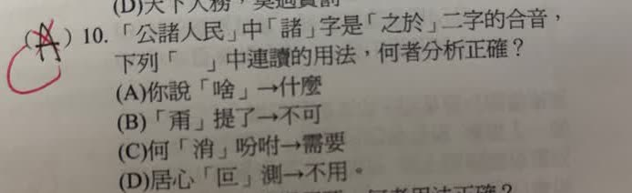

分享原卷｜第10題
完整原題
「公諸人民」中「諸」字是「之於」二字的合音，下列「 」中連讀的用法，何者分析正確？
(A) 你說「啥」→什麼
(B) 「甭」提了→不可
(C) 何「消」吩咐→需要
(D) 居心「叵」測→不用
先想一想，再查看答案、解說與原圖
原卷作答：A（原卷紅筆改C）
原卷預期：(C)；A亦有字義與合音依據，保留單選疑義。
逐項解析
| 選項與原句 | 判讀 | 句意與判斷理由 |
|---|---|---|
| (A) 你說「啥」→什麼 | 亦有依據 | 啥的字義確是什麼，合音分析亦有文獻依據；不能武斷排除，保留單選疑義。 |
| (B) 「甭」提了→不可 | 不選 | 甭＝不用，不能解成不可。 |
| (C) 何「消」吩咐→需要 | 原卷預期 | 消＝需要，且有需要合音的辭典依據；原卷預期C。 |
| (D) 居心「叵」測→不用 | 不選 | 叵＝不可，居心叵測指心意難以揣測，不是不用。 |
詳細說明與解題步驟
原卷紅筆及對話後續指定的預期答案為C。「消」在「何消吩咐」中是需要的意思；教育部辭典的「只消」條明確將消解作「需要」的合音。因此「何消吩咐」就是哪裡需要再吩咐。原AI先說消不是合音字，這項解釋應訂正。
B的甭是不用，不是不可；D的叵是不可，不是不用。兩者不能互換。
A需要保留說明：原卷確實印「啥」，教育部辭典解作甚麼，語言研究也有把啥分析為什麼合音的依據。因此不能為了配合單選C，硬說啥不是什麼，或斷言方言一定不能有合音。本頁保留原卷預期C，但A也有成立依據，單選排除理由需由老師確認；題目及四選項照留。
查核：[教育部：只消](https://dict.revised.moe.edu.tw/dictView.jsp?ID=113846&q=1&word=%E6%B6%88)、[教育部：啥](https://dict.concised.moe.edu.tw/dictView.jsp?ID=33869&la=0&powerMode=0)、[澳門語言學刊48期](https://fah.um.edu.mo/wp-content/uploads/2021/06/%E6%BE%B3%E9%96%80%E8%AA%9E%E8%A8%80%E5%AD%B8%E5%88%8A48%E6%9C%9F_2016%E4%B8%8B.pdf)。
核對註記：已逐一閱讀原卷，完整保留題幹、四選項及所需文章；不依AI摘要猜補。教材課次未能確認，歸綜合。
原圖（僅本題）
